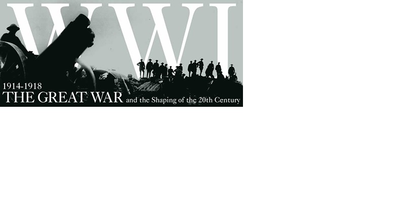
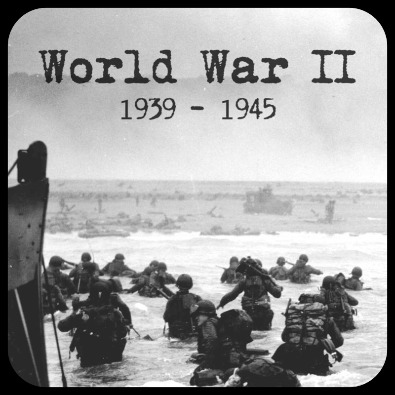

Experience History
Unit 1 Unit 2 Unit 3 Go to bottom
This course is Gr.10 history. It will talking about Canada in World War I, Canada in World War II and hwo is Canada in Cold War. This course is importent, because it is our responsibility to know what happen in the past. So on this course we will talking about why is the war happen. We will learn some importent person in that war, and why will cause the war.
UNIT: 1 Emerging Identity， 1914~1920
Chpter2 Go back to the top
This is the first unit of this course. In this unit we will talking about how is Canada in World War I. What cause of the World War I? What happen in the end of World War I and how it happen.
- Chapter1: Canada in World War I
- Private Fraser's War
- The Great War
- Causes of the Great War
- Canada Enters the War
- War in the Trenches
- Important Battles of the Great War
- Canadian Women in th e Great War
- The War in the Air
- The war at Sea
- The End of the war
- Wrap It Up

find more about Canada in World War I
- Chapter2: On the Home Front
- If You Were in Charge
- Total Commitment: The War at Home
- Women on the Home Front
- Conflicts and Crises at Home
- More Troubles After the Great War
- Wrap It Up
- Performance Task: Create a Multimedia Display About WWI
Go back to Unit: 1 Go back to the top
find more about war on the homefront World War I Canada
UNIT: 2 Growing Independence, 1920~1939
Chpter2 Go back to the top
Here is the second unit of this course. In this unit we will talking about what happen in bewteen World War I and World War II
- Chapter1: The Twenties: Growth and Change
- Canadian Inventors Match- Up
- Canada and the World
- An Urban Way of Life
- Changing Social Values
- An Inventive Era
- Wrap It Up

find more about The Twenties: Growth and Change
- Chapter2: The Twenties: Boon and Bust
- The Human Fly
- The Economic Boom
- Did Everyone Benefit from the Boom?
- Playing the Stock Market
- Black Tuesday
- Wrap It Up
Go back to Unit: 2 Go back to the top
find more about The Twenties: Boon and Bust
UNIT: 3 Coming of Age, 1939~1960
Chpter2 Go back to the top
Here is the third unit of this course. In this unit we will talking about World War II. The war at sea, the war on land, the war in the air and the end of the World War II.
- Chapter1:Canadians Overseas in World War II
- The War Year by Year
- The War at Sea
- The War on Land
- The War in the Air
- The War's End
- How Canadian Communities Contributed Overseas
- Wrap It Up

find more about Canadians Overseas in World War II
- Chapter2: Canada and World Affairs, 1945 to 1960
- Canada： A Middle Power
- Post-war Tensions
- Living in America's Shadow
- Wrap It Up
Go back to Unit: 3 Go back to the top
find more about Canada and World Affairs, 1945 to 1960